Football
World of Football: The Beautiful Game Football, known as soccer in some places, captivates billions worldwide. It's more than a sport—it's a global language of passion, teamwork, and triumph. From packed stadiums to street games in neighborhoods, its universal appeal unites people across cultures. Brief History of Football Football's roots trace back thousands of years, but the modern game emerged in 19th-century England. Ancient versions existed in China (cuju) and medieval Europe (mob football), but Ebenezer Cobb Morley standardized rules in 1863, founding the Football Association. FIFA formed in 1904, and the first World Cup kicked off in 1930. Today, over 4 billion fans follow it, making it Earth's most popular sport. Football captivates billions as the world's most popular sport, blending athleticism, strategy, and raw passion across every continent from Europe's packed stadiums to Brazil's street futsal and Africa's dusty pitches. A simple ball and feet spark global drama—90-minute battles where 11 players per team chase glory on 105-meter pitches, following FIFA's universal laws born in 1863 England. Icons like Messi's genius dribbles, Ronaldo's aerial dominance, Maldini's defensive masterclasses, and Mbappé's lightning sprints define eras , while clubs Manchester United,Real Madrid (15 Champions Leagues) , and Juventus fuel rivalries that generate $50 billion yearly. World Cups every four years crown kings—Argentina's 2022 penalty triumph, France's 2018 demolition—while Champions League nights at Bernabéu or Anfield create legends amid 80,000 roaring fans. Rules demand discipline: no hands except goalkeepers, offside traps force movement, yellow cards warn, reds eject, and penalties decide fates from 11 meters. From ancient China's cuju to 2026's expanded 48-team tournament across North America, football unites rivals, builds economies, and turns kids worldwide into dreamers kicking socks in alleys. "Among all sports and all players in the world, there is no sport bigger than football".
History of Football
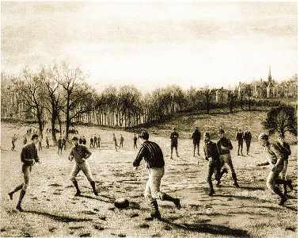
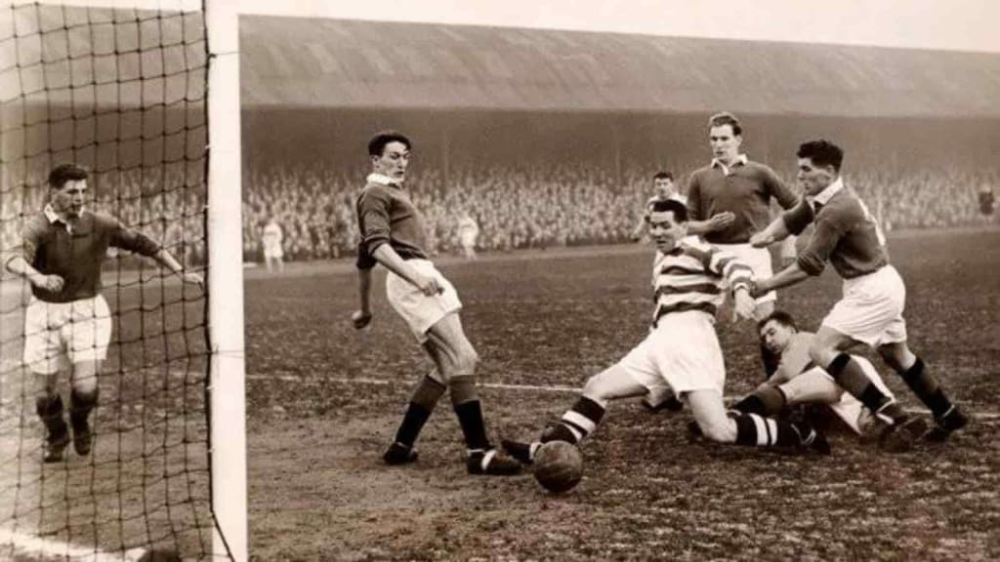
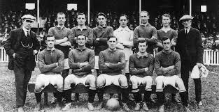
Football began with ancient China's cuju game from the 2nd century BC, where players kicked balls into small nets, and evolved through medieval Europe's violent mob football played by entire villages. Modern rules formed in 1848 at Cambridge University when students standardized play, then Ebenezer Cobb Morley wrote the official laws in 1863, creating England's Football Association that banned hands entirely. By late 1800s, Sheffield FC became the world's first club in 1857England's Football Association, spreading the sport through British schools, factories, and colonies. The 1930 World Cup in Uruguay exploded its popularity worldwide—Uruguay beat Argentina 4-2 before 68,000 fans despite only 13 teams competing. FIFA launched in 1904, adding Olympics football , while post-WWII tournaments like Copa América grew regional rivalries. Rules evolved too—1925 offside change boosted goals, professionalizing clubs like Notts County and Queen's Park.
Rules Of Football

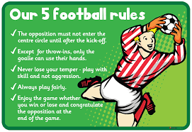
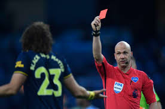
A standard match features two teams of 11 players aiming to score by getting the ball into the opponent's net. Games run 90 minutes across two halves, with added stoppage time for Key rules include no hands (except goalkeepers in their box), the offside trap to prevent cherry-picking, and fouls leading to free kicks or Yellow cards warn players; red sends them off. Simple yet strategic, these rules demand skill and discipline.Football matches feature two teams of 11 players each—including one goalkeeper—competing on a rectangular pitch measuring 100-110 meters long by 64-75 meters wide, aiming to score more goals by getting the ball across the opponent's goal line within two 45-minute halves plus added stoppage time for injuries and delays. Players cannot use hands or arms except the goalkeeper within their penalty area, while fouls like tripping, pushing, or holding result in free kicks—direct ones allowing immediate shots or indirect requiring a second touch—and serious box violations award 11-meter penalty kicks in tense one-on-one duels with the keeper. The Offiside rule prevents cherry-picking by ruling a player offside if they're nearer the goal line than both the ball and second-last opponent when receiving a pass, forcing dynamic attacking runs and midfield battles. Yellow cards serve as cautions for reckless challenges, dissent, or time-wasting—accumulating two sends a player off with a red card—while direct reds immediately eject for violent conduct, spitting, or denying clear goal chances via foul, leaving teams short-handed. Restarts include throw-ins when the ball crosses touchlines, goal kicks for defenders putting it out the back, and corner kicks when attackers force it over the goal line, all maintaining continuous flowing play. Substitutions allow up to five changes per match, VAR technology now reviews critical decisions like penalties and reds, and the referee's whistle governs everything from kickoff to final whistle amid building tension.
Major Tournaments
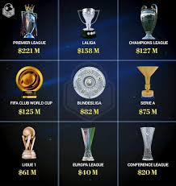
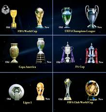
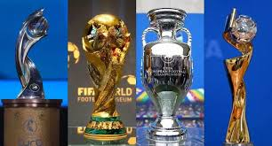
The FIFA World Cup stands as football's ultimate spectacle, held every four years since Uruguay's 1930 triumph and captivating billions through national pride—Argentina's Lionel Messi ended his international drought with 2022's dramatic penalty shootout over France, while France dominated 2018 with Kylian Mbappé's teenage brilliance, and the 2026 edition expands to 48 teams across 16 North American cities for unprecedented scale. Europe's UEFA Champions League pits continent's elite clubs in midweek drama, Real Madrid leading with 15 titles including their 2024 conquest and historic three-peats, Manchester City's Pep Guardiola era breaking English drought in 2023 amid Bernabéu comebacks and Anfield nights that echo for generations. South America's Copa América, dating back to 1916, fuels Messi-led Argentina's 16 victories against Uruguay's, Brazil's sambsaeo power, while Africa's Axfrica Cup of Nations showcases Morocco's 2022 charge and Senegal's Sadio Mané-inspired glory. Club leagues amplify the frenzy—England's Premier League generates billions through Manchester City vs Arsenal title races broadcast to 200+ countries, Spain's La Liga thrives on Real Madrid-Barcelona El Clásicos where Mbappé now faces old PSG foes, Italy's Serie A sees Juventus rebuild post-Ronaldo with defensive steel, and Germany's Bundesliga packs Bayern Munich's Allianz Arena for Harry Kane's goal hauls. Women's tournaments surge too—Spain's 2023 World Cup victory and England's Euro 2022 home triumph signal equality's rise, alongside youth events like U-20 World Cups nurturing future Messis. Continental clashes, club World Cups, and Olympics football create year-round theatre where underdogs like Greece's 2004 Euro shock or Porto's 2004 UCL upset prove glory favors the bold. The FIFA World Cup crowns football's kings every four years since Uruguay's 1930 win, with France triumphing in 2018 and Messi's Argentina claiming 2022 in penalty drama—2026 expands to 48 teams across North America. Europe's UEFA Champions League , born 1955, sees Real Madrid's record 15 titles including 2024, while Manchester City's 2023 breakthrough under Pep Guardiola challenged Spanish dominance. South America's Copa América started 1916 with Argentina's 16 wins edging Uruguay's 15 and Brazil's 9, highlighted by Messi's recent back-to-backs. England's Premier League, world's richest since 1992, pits Manchester City (four straight titles), Arsenal, and Liverpool in global TV battles reaching 200+ countries weekly.
Football Legends
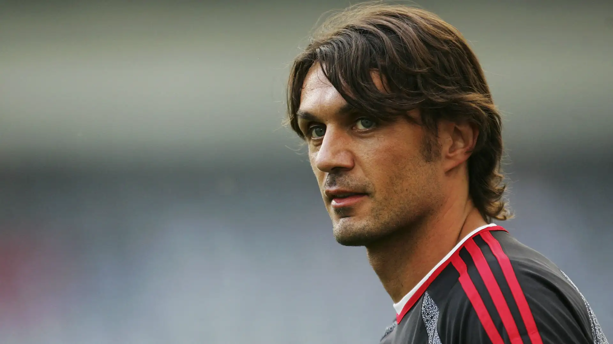
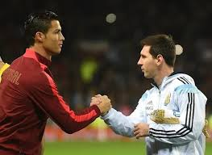
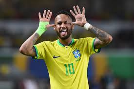
Italy’s Paolo Maldini is one of football’s greatest defenders, spending his entire career at AC Milan and becoming a symbol of loyalty and elegance in defence. He debuted at just 16, went on to make over 900 appearances for the club, and helped Milan win 7 Serie A titles and 5 European Cups/Champions Leagues with his calm tackling, perfect positioning, and leadership.
Argentina's Lionel Messi joined Barcelona at 13 from Rosario, becoming club legend with 672 goals, eight Ballon d'Ors, and 2022 World Cup glory —now dazzling MLS with Inter Miami at 38.Portugal'
Cristiano Ronaldo smashed 900+ goals across Manchester United, Real Madrid (450 goals, five Champions Leagues) , Juventus, and Al-Nassr , blending Madeira street grit with Euro 2016 triumph. Brazil's Neymar lit up Santos before Barcelona's MSN trio won 2015 Champions League , then PSG's €222M record fee—400+ goals keep his flair elite despite injuries.Clubs
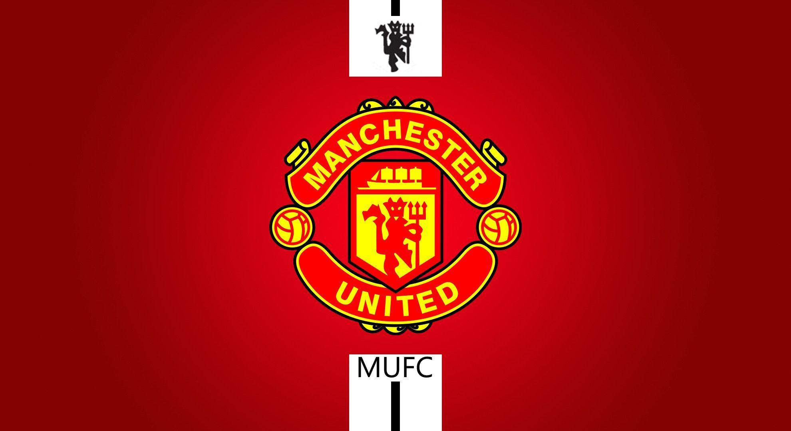
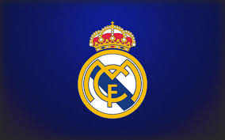
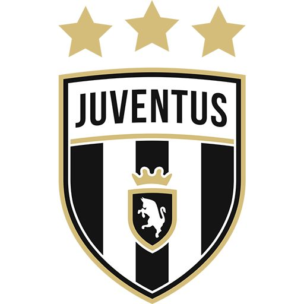
Manchester United rose from Newton Heath in 1878 to global giants under Sir Alex Ferguson, conquering 13 Premier League titles, 3 Champions Leagues, and iconic Class of '92 triumphs with Beckham, Giggs, and Scholes at Old Trafford's Theatre of Dreams. Their ferocious Red Devils identity fueled 1999's treble—Premier League, FA Cup, Champions League—while commercial empire spans 650 million fans worldwide, though recent years saw Europa League focus after Ronaldo's return. Real Madrid, founded 1902, reigns supreme with 15 Champions League trophies including three-peats (2016-18) , their Galácticos era starring Zidane, Ronaldo (450 goals), and now Mbappé filling Bernabéu’s 81,000 seats nightly. Los Blancos mastered comebacks like 2022 UCL finals , blending Spanish flair with ruthless winning mentality—36 La Liga titles and eternal rivalry with Barcelona define their white-clad supremacy across eras. Juventus, Italy's Old Lady since 1897, dominates with 36 Serie A crowns and black-white Turin army filling Allianz Stadium for Ronaldo's 101-goal stint (2018-21). Sacchi's tactics birthed 2 Champions Leagues (1996, 1998), while recent Vlahović leads post-CR7 rebuild—Coppa Italia specialists known for defensive steel (catenaccio evolution) and fiercest Derby d'Italia vs Inter Milan.